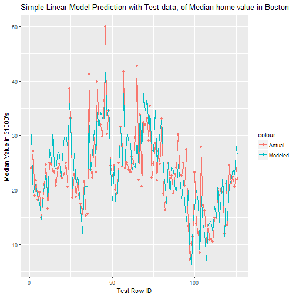

- The main function of the traning sampling app is to determine the best percentage to sample for building a model.
- This app uses, R's Boston dataset. Which has median home values and other features from 1978
- This app generates a simple linear model from a trainset determined by the percentage in the slider. It uses the generated model to predict the "Median value of owner occupied homes" on the remaining holdout or testset data. The prediction is then presented visually with a plot between the "Actual' median value in the testset and the model predicted "Modeled" value for the testset. A R-Squared value is also presented to show the quality of the fit, whose value range from 0 to 1. Higher R Squared usually represents a better fit. We use this and the fit of the chart to determine the sampling percentage.
- The percentage determined could then be used to do other detailed analysis and modeling using advance machine learning algorithms.
This is a presentation pitch for the Shiny app for Data product project
Training Sampling APP
Ram Narayanan (18th June 2017)
Training sampling App Description
Results of sampling with 75% training data
## [1] "Test R Squared: 0.742628367165728"

Results of sampling with 65% training data
## [1] "Test R Squared: 0.741000486277999"

Conclusion
Based on the R-Squared value from the sampling with a simple linear model this app helps in deciding the appropriate training set.
Thank You